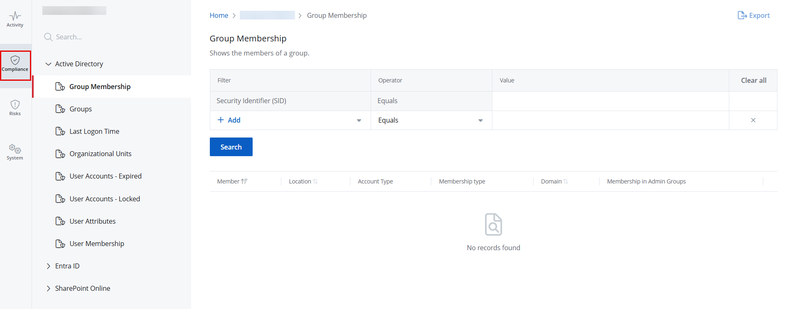

Compliance Reports
Compliance reports help clients and Managed Service Providers gather information about their {{ no such element: dict object['Azure_AD_app'] }}, Active Directory, and SharePoint Online configuration state at a specific point in time. This enables them to prove compliance with many regulations to auditors. Compliance reports provide information on user attributes, expired or locked user accounts, group memberships, and so on.
Review a Report
Follow the steps to review a Compliance report. Click Reports in the top bar to navigate to the Reports page. By default, the page opens to the Activity tab with New Investigation selected in the left pane. Select an organization from the drop-down menu at the top of the left pane to access its reports. An organization is selected by default, but you can choose a different one if needed.
Click the Compliance tab to access the compliance reports. This opens the Compliance page with the Group Membership report selected by default in the left pane. In left pane, click a category to view its reports. Categories are:
- Active Directory
- Entra ID
- SharePoint Online Click a report to open it. Reports without a filter generate automatically when you open them. Click Search to generate reports with a predefined filter set.
A list of the available Compliance reports is given below.
Active Directory
| Report Name | Description |
|---|---|
| Group Membership | Lists the members of a group. For each member, it provides details, including the name, path, account type, membership type, domain, and admin group membership. |
| Groups | Lists all groups within Active Directory. For each group, it provides details, including the name, path, group scope, group type, and direct member count. |
| Last Logon Time | Lists user and computer accounts with the path, status (enabled, disabled), account type, and last login time for each. |
| Organizational Units | Lists the organizational units and their paths. |
| User Accounts - Expired | Lists expired user accounts, with the path, logon name, and expiration date for each account. |
| User Accounts - Locked | Lists locked user accounts, with the path, logon name, and lock date for each account. |
| User Attributes | Lists the user accounts with settings that violate company policies or applicable compliance standards. |
| User Membership | Lists the groups the user is a member of, with the permissions granted to the groups. |
| Report Name | Description |
|---|---|
| Role Members | Lists {{ no such element: dict object['Azure_AD_app'] }} accounts (members or guests) assigned to a given role in your organization. Use this report to identify unauthorized role assignments or changes. |
| Roles | Lists the {{ no such element: dict object['Azure_AD_app'] }} roles in your organization and the number of accounts (members or guests) assigned to each role. |
| User Attributes | Lists the user accounts with settings that violate company policies or applicable compliance standards. |
SharePoint Online
| Name | Description |
|---|---|
| Broken Permissions Inheritance | Lists objects with permissions that differ from their parent, such as a folder with permissions different from its parent site. |
| Direct Object Permissions | Lists all identities (users or groups) that have assigned permissions to specific objects, such as documents, lists, or sites. Use this report to review which users or groups have access to data objects. |
| Direct User Permissions | Lists user accounts with direct permissions to specific objects. Use this report to see which users have permissions to what data. |
| High Risk Permissions | Lists the permissions and permission levels of high-risk trustees, such as Everyone, Authenticated Users, and Everyone except external users. |
| Permissions Overview by Resource | Provides a summary of assigned permissions in your organization, including the count of direct user permissions, stale permissions, broken permission inheritance, and high-risk permissions for each object. Click any permissions value to navigate to the specific permissions report for the selected resource. For example, clicking a High Risk Permissions value will take you to the High Risk Permissions report. |
Sort a Report Click a column header to sort data in a report by that column in ascending order. An arrow appears next to the column name to indicate the sort order. Click the column header again to sort the data in descending order. Filter a Report You can filter the data displayed in a report. Select a filter, operator, and value from the Filter, Operator, and Value drop-down menus, then click Search. You can select more than one filter. For options displayed in the Operator drop-down menu, see the Filter Operators) topic.
Filter Descriptions
This table provides a list of filters and descriptions.
| Filter | Description |
|---|---|
| Group Type | Filters the report based on any of the following group types: |
Security |
|
Distribution |
|
To apply this filter, select Group Type from the Filter drop-down menu and choose an option from the Value drop-down menu. |
|
| Group Name | Filters the report based on the name of a group. |
To apply this filter, select Group Name from the Filter drop-down menu and specify a group name in the Value field. |
|
| Member Type | Filters the report based on any of the following member types: |
User |
|
Computer |
|
Group |
|
To apply this filter, select Member Type from the Filter drop-down menu and choose an option from the Value drop-down menu. |
|
| Membership |
|
Type |
Filters the report based on any of the following membership types: |
Direct |
|
Nested |
|
To apply this filter, select Membership Type from the Filter drop-down menu and choose an option from the Value drop-down menu. |
|
| Name | Filters the report based on the name of a user or computer account. |
To apply this filter, select Name from the Filter drop-down menu and specify a user or computer name in the Value field. |
|
| Path | This is a filter in the report, Groups. |
It filters the report based on the path of an object, which is a member of the group. The object can be a computer, user, or group. For example, "Account operator" is a group and its path is "BUILTIN/Account Operators", which is how you can find it in Active Directory Users and Computers (ADUC). |
|
To apply this filter, select Path from the Filter drop-down menu and specify a path in the Value field. |
|
| Security Identifier (SID) | Filters the report based on a Security Identifier (SID). The Security Identifier is a unique ID number that a computer or domain controller uses to identify you. |
To apply this filter, select Security Identifier (SID) from the Filter drop-down menu and specify a SID in the Value field. |
|
This filter is shown by default in the Group Membership report. |
|
| Status | Filters the report based on any of the following user account statuses: |
Enabled |
|
Disabled |
|
To apply this filter, select Status from the Filter drop-down menu and choose a status from the Value drop-down menu. |
|
| Inactive days | Filters the report based on an account's inactive days. |
To apply this filter, select Inactive Days from the Filter drop-down menu and specify the number of inactive days in the Value field. |
|
| AD and {{ no such element: dict object['Azure_AD_app'] }} User Attributes filters | Depending on the following filters, review the specific information on the user accounts that violate company policies or applicable compliance standards: |
Account Cannot be Delegated |
|
Cannot Change Password |
|
Change Password on next sign in |
|
City |
|
Country |
|
Creation Date |
|
Department |
|
Description |
|
Email Address |
|
Expiration Date |
|
First Name |
|
Is Locked |
|
Job Title |
|
Last Login |
|
Last Modified |
|
Last Name |
|
Password Expiry |
|
Password Last Changed |
|
Path |
|
Post Code |
|
Primary Contact Number |
|
SAM Account Name |
|
State or Province |
|
Status |
|
Street Address |
|
UPN (User Principal Name) |
|
| Domain | Filters the report based on the domain. |
To apply this filter, select Domain from the Filter drop-down menu and specify the name of a |
|
| Group Scope | Filters the report based on any of the following group scopes: |
Universal |
|
Global |
|
Domain Local |
|
To apply this filter, select Group Scope from the Filter drop-down menu and choose an option from the Value drop-down menu. |
|
| Group Location | Filters the report based on the specific location of a group in the directory. |
To apply this filter, select Group Location from the Filter drop-down menu and specify a |
|
| Group Type | Filters the report based on any of the following group types: |
Security |
|
Distribution |
|
To apply this filter, select Group Type from the Filter drop-down menu and choose an option from the Value drop-down menu. |
|
| Department | Filters the report based on a department in your organization. |
To apply this filter, select Department from the Filter drop-down menu and specify the name of a department in the Value field. |
|
| Job Role | Filters the report based on a job role in your organization. |
To apply this filter, select Job Role from the Filter drop-down menu and specify a role in the Value field. |
|
| User Origin | Filters the report based on any of the following platforms where the user was initially created: |
Hybrid AD |
|
{{ no such element: dict object['Azure_AD_app'] }} |
|
To apply this filter, select User Origin from the Filter drop-down menu and choose a value from the Value drop-down menu. |
|
| User Type | Filters the report based on any of the following user types in Microsoft 365: |
Member |
|
Guest |
|
To apply this filter, select User Type from the Filter drop-down menu and choose a value from the Value drop-down menu. |
|
| Member Count | This filter appears in the Roles report and it filters the roles based on how many users are in it. You have to provide a number as a filter criterion and the report will display the roles that have the specified number of users. |
To apply this filter, select Member Count from the Filter drop-down menu and specify a number in the Value field. |
|
| Role | This filter appears in the Roles report and it filters the list of roles in the report according to a name. For example. adding the filter "Role Contains 'Administrator'" will return a list of roles like Global Administrator, Exchange Administrator, etc. It will not return roles that do not contain the word. |
To apply this filter, select Role from the Filter drop-down menu and specify the full or partial name of a role in the Value field. |
|
| Enabled | Filters the report based on any of the following account statuses: |
Enabled |
|
Disabled |
|
To apply this filter, select Enabled from the Filter drop-down menu and choose an option from the Value drop-down menu. |
|
| Is Built-In | Filters the report based on predefined roles in your organization. |
To apply this filter, select Is Built-In from the Filter drop-down menu and choose either Yes or No from the Value drop-down menu. |
|
| Is Privileged | Filters the report based on privileged roles in your organization. |
To apply this filter, select Is Privileged from the Filter drop-down menu and choose either Yes or No from the Value drop-down menu. |
|
| Resource Name | Filters the report based on the name of an object, such as Document. |
To apply this filter, select Resource Name from the Filter drop-down menu and specify an object name in the Value field. |
|
| Object URL | Filters the report based on the URL of an object. For example, SharePointHomeOrgLinks is an object and its URL is https://lbkt.sharepoint.com/Lists/SharePointHomeOrgLinks |
To apply this filter, select Object URL from the Filter drop-down menu and specify an Object URL in the Value field. |
|
| Object Type | Filters the report based on an object type. For example, Documents is an object and its type is SharePoint Online Document Library. |
To apply this filter, select Object Type from the Filter drop-down menu and choose an option from the Value drop-down menu. |
|
| Accounts | Filters the report based on an account (user or group) with permissions to data objects, such as Site Collection Administrators. |
To apply this filter, select Account from the Filter drop-down menu and specify an account name in the Value field. |
|
| Account Type | Filters the report based on an account type, such as SharePoint Online Group. The report will display accounts belonging to the specified type with permissions to data objects. |
To apply this filter, select Account Type from the Filter drop-down menu and choose an option from the Value drop-down menu. |
|
| Permissions | Filters the report based on the permission assigned to an account, such as Add Items, Edit Items, Delete Items, etc. |
To apply this filter, select Permissions from the Filter drop-down menu and choose an option from the Value drop-down menu. |
|
| Last Logon | Filters the report based on an account's last logon date and time. |
To apply this filter, select Last Logon from the Filter drop-down menu and choose a date and time from the Value drop-down menu. |